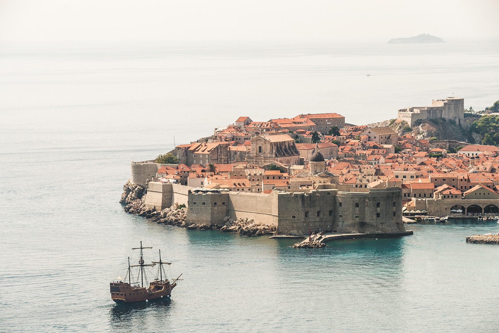

Capítulo primero: Marsella. La llegada
El 24 de febrero de 1815, el vigía de Nuestra Señora de la Guarda dio la señal de que se hallaba a la vista el bergantín El Faraón procedente de Esmirna, Trieste y Nápoles. Como suele hacerse en tales casos, salió inmediatamente en su busca un práctico, que pasó por delante del castillo de If y subió a bordo del buque entre la isla de Rión y el cabo Mongión. En un instante, y también como de costumbre, se llenó de curiosos la plataforma del castillo de San Juan, porque en Marsella se daba gran importancia a la llegada de un buque y sobre todo si le sucedía lo que al Faraón, cuyo casco había salido de los astilleros de la antigua Focia y pertenecía a un naviero de la ciudad.
Mientras tanto, el buque seguía avanzando; habiendo pasado felizmente el estrecho producido por alguna erupción volcánica entre las islas de Calasapeigne y de Jaros, dobló la punta de Pomegue hendiendo las olas bajo sus tres gavias, su gran foque y la mesana. Lo hacía con tanta lentitud y tan penosos movimientos, que los curiosos, que por instinto presienten la desgracia, preguntábanse unos a otros qué accidente podía haber sobrevenido al buque. Los más peritos en navegación reconocieron al punto que, de haber sucedido alguna desgracia, no debía de haber sido al buque, puesto que, aun cuando con mucha lentitud, seguía éste avanzando con todas las condiciones de los buques bien gobernados.
En su puesto estaba preparada el ancla, sueltos los cabos del bauprés, y al lado del piloto, que se disponía a hacer que El Faraón enfilase la estrecha boca del puerto de Marsella, hallábase un joven de fisonomía inteligente que, con mirada muy viva, observaba cada uno de los movimientos del buque y repetía las órdenes del piloto.
Entre los espectadores que se hallaban reunidos en la explanada de San Juan, había uno que parecía más inquieto que los demás y que, no pudiendo contenerse y esperar a que el buque fondeara, saltó a un bote y ordenó que le llevasen al Faraón, al que alcanzó frente al muelle de la Reserva.
El declive era tan pequeño, que anduve cerca de una milla para llegar a la playa, lo que conseguí, según mi cuenta, a eso de las ocho de la noche. Avancé después tierra adentro cerca de media milla, sin descubrir señal alguna de casas ni habitantes caso de haberlos, yo estaba en tan miserable condición que no podía advertirlo. Me encontraba cansado en extremo, y con esto, más lo caluroso del tiempo y la media pinta de aguardiente que me había bebido al abandonar el barco, sentí que me ganaba el sueño. Me tendí en la hierba, que era muy corta y suave, y dormí más profundamente que recordaba haber dormido en mi vida, y durante unas nueve horas, según pude ver, pues al despertarme amanecía. Intenté levantarme, pero no pude moverme me habíaEl declive era tan pequeño, que anduve cerca de una milla para llegar a la playa, lo que conseguí, según mi cuenta, a eso de las ocho de la noche. Avancé después tierra adentro cerca de media milla, sin descubrir señal alguna de casas ni habitantes caso de haberlos, yo estaba en tan miserable condición que no podía advertirlo. Me encontraba cansado en extremo, y con esto, más lo caluroso del tiempo y la media pinta de aguardiente que me había bebido al abandonar el barco, sentí que me ganaba el sueño. Me tendí en la hierba, que era muy corta y suave, y dormí más profundamente que recordaba haber dormido en mi vida, y durante unas nueve horas, según pude ver, pues al despertarme amanecía. Intenté levantarme, pero no pude moverme me había
-¡Ah! ¡Sois vos Edmundo! ¿Qué es lo que ha sucedido? -preguntó el del bote- ¿Qué significan esas caras tan tristes que tienen todos los de la tripulación?
-Una gran desgracia, para mí al menos, señor Morrel -respondió Edmundo-. Al llegar a la altura de Civita-Vecchia, falleció el valiente capitán Leclerc...
-¿Y el cargamento? -preguntó con ansia el naviero.
-Intacto, sin novedad. El capitán Leclerc...
-¿Qué le ha sucedido? ¾preguntó el naviero, ya más tranquilo¾. ¿Qué le ocurrió a ese valiente capitán?
-Murió.